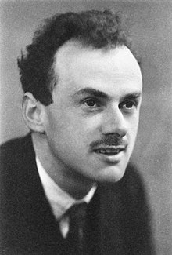

Cet article présente les différents modèles de gravité quantique ou théorie du tout. La théorie du tout consiste à unifier les deux plus grandes théories du XXe siècle, qui ont bouleversé notre vision du monde. Ces deux théories sont respectivement la relativité générale formulée par Einstein en modifiant la loi de Newton, qui traite de la force gravitationnelle, et la mécanique quantique, théorisée par un grand nombre de chercheurs dont les plus connus sont Schrödinger, Heisenberg, Planck ou encore Dirac. Cette dernière explique le monde à une échelle infiniment petite : la matière se comporte différemment à cette échelle. Ce domaine de la physique est notamment à l’origine de la découverte des atomes, neutrons, électrons et protons ou encore plus petit comme les particules élémentaires. Pour résumer, la mécanique quantique est l’ensemble des principes qui nous indiquent comment une force se comporte au niveau microscopique. Il est peut-être un peu absurde d’essayer d’unifier ces théories car la relativité générale s’occupe des objets très lourds, qui sont en général très grands alors que la mécanique quantique est centrée sur des particules très petites à une échelle minuscule. Il existe cependant deux exceptions à la règles : le Big Bang et les singularités (centres des trous noirs) qui sont infiniment petits et aussi infiniment dense et massif.
Quels sont les différents modèles de gravitation et laquelle pensons-nous être la meilleure?
La matière noire fait partie des éléments de l’univers les moins connus au sein de la communauté scientifique. Elle n’a encore jamais été observée malgré les dizaines de méthodes proposées. Sa masse volumique serait quasi équivalente à celle de la matière en moyenne (masse totale 6 fois plus élevée pour un volume 5 fois plus élevé). Actuellement, la méthode la plus proche de la découverte réelle de la matière noire a été proposée par le SLAC National Accelerator Laboratory et l'Université Paris-Saclay. Ils ont estimé que la matière noire pouvait être détectée à travers les ondes de choc supersoniques produites lors de collisions entre des étoiles et des concentrations de matière noire appelées astéroïdes de matière noire. Selon les chercheurs, ces collisions seront observables par la mission Ultrasat dès 2024.
La théorie de MOND apparaît en 1983 avec Mordehai Milgrom, physicien à une Université en Israël. Elle postule un changement d’une des trois lois de Newton, celle sur la force (F = m x a). Ce changement porte une grande importance : il supprime le besoin de la matière noire. MOND n’est bien sûr pas parfait mais a commencé le développement d’un ensemble de théories qui postulent un Univers sans matière noire.
Les principaux défauts de MOND sont le fait que ce n’est pas une théorie du tout : cela signifie que MOND ne résout pas tous les problèmes. Les autres problèmes majeurs qu’il pose sont le fait que ça n'explique pas bien le mouvement des amas de galaxies et que ce n’est pas relativiste.
Il y a eu plusieurs tentatives de relativisation de MOND depuis 1983, une notamment au début des années 2000, appelée TeVeS (tensor-vector-scalar) qui a reçu du succès avant d'être prouvée fausse dans les années 2010. Depuis, la piste recevant le plus de succès est RMOND, une version de MOND qui serait relativiste. Publiée au début de cette année, cette théorie semble prometteuse. Cependant, il faut bien se méfier. Nous devons apprendre de TeVeS et se souvenir qu’en science, il y a toujours une forte possibilité qu'une théorie, aussi fondamentale qu’elle puisse être, soit fausse.
Du côté des maths : MOND demande un changement de la formule F = m x a :
F = m x μ(a/a0)xa avec :
-μ(a/a0) = 1 si a >> a0
-μ(a/a0) = a/a0 si a << a0
Notre corps est composé de matière et cette matière est elle-même composée de particules (électrons,quarks et neutrinos).
Les particules se déplacent dans l’univers et avec la courbure de l’espace-temps on s’attend à ce qu’il y en ai une responsable de la gravité.
Mais cette particule n’a encore pas été prouvé, c’est ainsi que les physiciens se penchent sur diverses théories telles que celle que nous allons aborder maintenant.
Il y a eu plusieurs tentatives de relativisation de MOND depuis 1983, une notamment au début des années 2000, appelée TeVeS (tensor-vector-scalar) qui a reçu du succès avant d'être prouvée fausse dans les années 2010. Depuis, la piste recevant le plus de succès est RMOND, une version de MOND qui serait relativiste. Publiée au début de cette année, cette théorie semble prometteuse. Cependant, il faut bien se méfier. Nous devons apprendre de TeVeS et se souvenir qu’en science, il y a toujours une forte possibilité qu'une théorie, aussi fondamentale qu’elle puisse être, soit fausse.
La théorie des cordes est une théorie d’unification de l’univers représenté sous la forme d’une corde vibrante permettant d’unifier les forces. Les particules seraient donc des cordes se distinguant par leur fréquence de vibration comme des élastiques qui vibrent différemment les uns des autres. C’est ainsi que le graviton (responsable de la gravité) se fait une place dans ce système.
Cependant, cette théorie contient plusieurs inconvénients :
- il n’y a aucune façon de la prouver pour l’instant (on ne s’appuie que sur les mathématiques )
- il y a au moins dix dimensions
- la taille supposée des cordes : 10-35 m
- la classification ne correspond seulement qu’aux bosons
L’antimatière est un sujet qui fascine les scientifiques depuis sa découverte en 1932 (prédite par Paul Dirac en 1932). Il s’agit d’une sorte de version inversée de la matière, de charge électrique contraire. On peut citer l’anti-électron ou positron, de charge électrique positive ou l’anti-proton, de charge électrique négative. L’anti-neutron reste donc inchangé (électriquement du moins). Son existence a été prouvée mais on ne connaît pas encore son influence sur la gravitation. Elle est aujourd’hui surtout considérée comme la possible énergie idéale pour l’exploration spatiale future, car son taux de rendement énergétique est énorme, c’est-à-dire que la perte d’énergie lors de son utilisation et son transport est extrêmement faible.
Photographie de Paul Dirac en 1933
La gravité quantique à boucles est un modèle de gravitation quantique dans lequel la structure de l’espace-temps est composée de petits “blocs” indivisibles, des sortes de particules ou de briques élémentaires de taille finie mais immensément petites. Dans cette théorie prometteuse, toutes les grandeurs géométriques sont donc quantifiées (longueurs, aires, volumes), il existerait par exemple une plus petite aire possible que puisse posséder une surface. Cependant, la plus petite longueur possible est extrêmement petite : aussi appelée “longueur de Planck”, elle mesure 10-35 mètres, soit 100 milliard de milliard de fois plus petit qu’un proton. Ces “atomes d’espace” seraient reliés entre eux en “réseaux de spins” (état quantique de la courbure de l’espace-temps). Dans ce modèle, l’espace n’est par conséquent pas continu mais discret : le principal problème est que pour l’instant, cela contredit la relativité générale. En outre, l’espace-temps serait une sorte d’espace-temps “bouillonnant” car les “atomes d’espace” peuvent passer d’un état à un autre et d’un réseau de spins à un autre grâce à des couches intermédiaires appelées “mousses de spins”. Cette théorie a été formulée en 1986 par le physicien indien Abhay Ashtekar qui a réécrit les équations d’Einstein différemment : mathématiquement, c’est différent mais physiquement, c’est la même chose.
Comment cela pourrait changer notre vision du monde ?
Comme, dans cette théorie, toutes les grandeurs sont quantifiées, il n’est pas possible d’accumuler indéfiniment au même endroit. Il existe donc une densité maximale que l’on ne peut pas atteindre : la densité de Planck dont la masse volumique est 5*1096 kg/m3. En conséquence, le Big Bang ne peut pas dépasser la densité de Planck donc son existence (tel que nous la connaissons actuellement) est erronée. La gravité quantique à boucles propose plutôt un “Big Bounce”. C’est à dire notre univers se serait créé à partir de l’effondrement d’un univers précédent qui aurait “rebondi” avant de s’étendre à nouveau pour former notre univers. Cependant, si cela était vrai, les calculs montrent que le “rebond” aurait effacé toutes traces de l’univers d’avant dans un “grand bouillonnement quantique”. Cette théorie n’est pas encore achevée mais les principales preuves de ce modèle se trouveraient dans le rayonnement du fond diffus cosmologique (rayonnement fossile). Les chercheurs pensent aussi trouver des informations précieuses en sondant la structure de l’espace-temps. Il faudrait pour cela que des rayons suffisamment énergétiques la traverse. Il nous ait pour l’instant impossible de produire des rayons aussi puissants mais ils peuvent se produire lors de phénomènes astrophysiques (rayons gamma).
Représentation du Big Bounce
Cet article a été rédigé par Rédaction par Clémentine Catalano, Alexancdre Chateau, Abigael Walmsley, Juliette Goriaud et Maxime Roulet